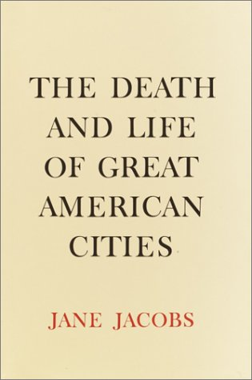

| Link | Description | Last Updated |
|---|---|---|
| Course Webpage | Official course webpage with syllabus and resources | 2026-09-04 |
| Professor Witter's Personal Website | Professor Witter's personal webpage with research and publications | 2026-09-04 |
| My Favorite quotes from the book. | Personal quotes and reflections on the book | 2026-09-04 |
| Find where the book is available. | Information about where to purchase or access the book | 2026-09-04 |
| See another student's Project. | A fellow student's website project | 2026-9-14 |
This book explores the dynamics of urban life and the impact of city planning on community vitality. Jane Jacobs thoughtfully dissects how car-dependent urban design can undermine the social fabric of communities. Her work helped push back against the Robert Moses Paradigm of Urban Planning, recentering our focus on the needs of people and communities. Jacobs' offers a scathing crituqe of the city planners of her time, critizing their approach to urban development as akin to the long-abandoned practice of bloodletting in the medical profession.
Jane Jacobs (1916–2006) was an American-born Canadian writer, activist, and urban theorist who revolutionized how people understand and design cities.